常見的大數據分析方法｜觀念圖解複習
這一章不難在計算，難在名詞多、長得像。每個單元都照「為什麼需要它 → 一步步搭起來 → 名詞各自定義 → 整合比較表 → 記憶鉤子 → 易錯提醒」整理。先看圖，再讀文字，最後用自我檢測練手感。
單元 ①分類評估指標：混淆矩陣、精確率、召回率、FPR、F1、ROC 與 PR 曲線
為什麼需要它？ 假設你做了一個模型，預測哪些客戶下個月會流失，好讓業務先去關心。老闆問：「它準不準？」這句話其實有好幾種問法：它說會流失的人，有幾成真的流失？真的會流失的人，它抓到幾成？沒有要流失的人，被它誤報了幾成？答案都不一樣，所以每個問法都有自己的名字。只要先學會畫一張混淆矩陣，所有名字都能從它算出來。
一步步搭起來
- 先數人頭：200 位客戶裡，事後看真的流失 40 人、沒流失 160 人。
- 再看模型怎麼說：模型說「會流失」50 人、「不會流失」150 人。
- 交叉成四格：說會、真的流失＝30 人（TP）；說會、其實沒流失＝20 人（FP）；說不會、其實流失了＝10 人（FN）；說不會、也真的沒流失＝140 人（TN）。
- 每個指標，就是「挑某一列或某一欄當分母」，看下圖。
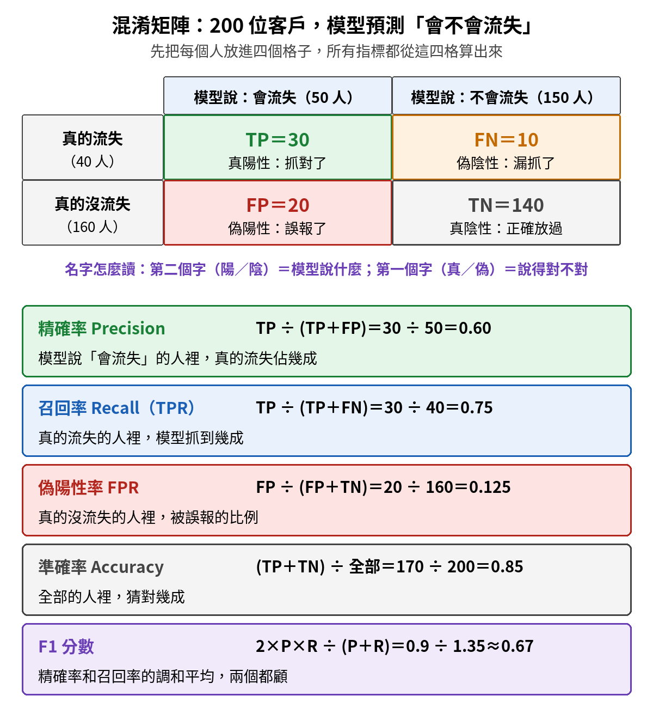
精確率和召回率最常搞混。它們的分子都是 TP（抓對的人），差別只在分母：
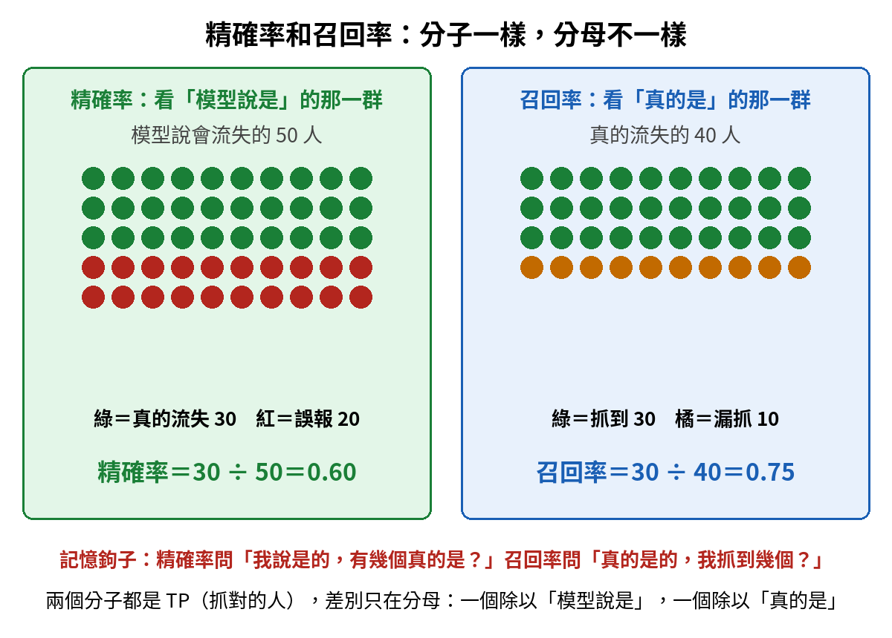
為什麼不能只看準確率？ 如果模型很懶，對 200 人一律說「不會流失」，準確率是 160 ÷ 200＝80%，看起來不差，但它一個要流失的人都沒抓到（召回率＝0）。「是」很少的資料（類別不平衡）裡，準確率會騙人。
名詞各自定義
混淆矩陣 Confusion Matrix
- 是什麼：把「真相」和「模型的預測」交叉成 2 × 2 四格：TP、FP、FN、TN。
- 怎麼讀名字：第二個字（陽／陰）＝模型說什麼；第一個字（真／偽）＝說得對不對。FP 偽陽性＝模型說「是」，但說錯了。
- 用途：所有分類指標的原料。
- 排列方向不固定：本頁把「真的」放橫列、「模型說」放直欄，正類放左上；但 Python 的 sklearn 預設依標籤由小到大排（0 在前），左上變成 TN、右下才是 TP。看到一張矩陣，先看列和欄的標籤，再找 TP。
準確率 Accuracy
- 是什麼：全部樣本裡猜對的比例＝(TP＋TN) ÷ 全部。例子：170 ÷ 200＝0.85。
- 適合：兩類人數差不多、兩種錯誤代價也差不多的時候。
- 優缺點：最直覺；但類別不平衡時會誤導。它是一個數字，不是 ROC／PR 曲線的軸。
精確率 Precision
- 是什麼：模型說「是」的那一群裡，真的是「是」的比例＝TP ÷ (TP＋FP)。例子：30 ÷ 50＝0.60。
- 適合：誤報代價高的情況，例如垃圾信過濾（把重要信丟進垃圾桶很糟）。
- 優缺點：看得出模型「說得有多可靠」；但不管漏掉多少，只挑最有把握的一兩個來說，精確率就很高。
召回率 Recall（也叫真陽性率 TPR、敏感度）
- 是什麼：真的是「是」的那一群裡，被模型抓到的比例＝TP ÷ (TP＋FN)。例子：30 ÷ 40＝0.75。
- 適合：漏抓代價高的情況，例如癌症篩檢、詐騙偵測、流失預警。
- 優缺點：看得出「漏網之魚有多少」；但不管誤報，把所有人都說成「是」，召回率就是 100%。
- 和精確率的拉扯：判「是」的門檻調低，召回率通常上升、精確率下降；調高則相反。
偽陽性率 FPR（False Positive Rate）
- 是什麼：真的是「否」的那一群裡，被誤報成「是」的比例＝FP ÷ (FP＋TN)。例子：20 ÷ 160＝0.125。
- 關聯：FPR＝1 − 特異度（特異度＝TN ÷ (FP＋TN)＝0.875）。
- 用途：ROC 曲線的橫軸。
F1 分數
- 是什麼：精確率和召回率的調和平均＝2 × P × R ÷ (P＋R)。例子：約 0.67。
- 適合：類別不平衡，精確率、召回率都想顧的時候。
- 優缺點：只要一邊很低，F1 就被拉低，不能靠單邊衝高；它和準確率一樣是一個數字，不是 ROC／PR 曲線的軸。
ROC 曲線與 AUC
- 是什麼：把判「是」的門檻從嚴到鬆一路調，每個門檻算出一組（FPR, TPR），連成曲線。橫軸 FPR、縱軸 TPR。
- 怎麼看：越靠左上角越好；斜對角線＝亂猜。曲線下面積叫 AUC，0.5＝亂猜，1＝完美。
- 優缺點：不用先決定門檻就能比模型；但「是」非常稀少時，ROC 看起來偏樂觀，這時改看 PR 曲線。
PR 曲線（Precision-Recall Curve）
- 是什麼：同樣一路調門檻，但畫的是橫軸召回率、縱軸精確率。
- 怎麼看：越靠右上角越好；亂猜的水平線高度＝資料中「是」的比例（例子 40 ÷ 200＝0.2）。
- 適合：「是」很稀少的資料，例如詐騙、罕見疾病。
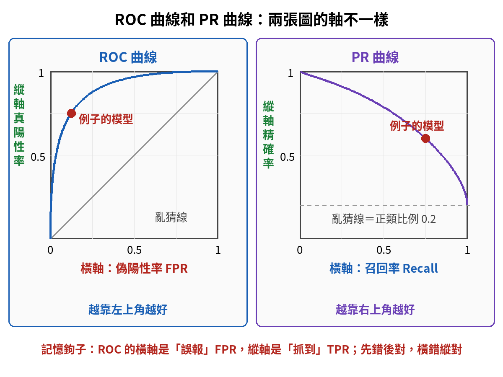
兩條曲線是同一個模型；紅點就是混淆矩陣例子的那個門檻：在 ROC 上是（FPR 0.125, TPR 0.75），在 PR 上是（召回率 0.75, 精確率 0.60）。
整合比較表
| 名詞 | 一句話定義 | 公式（例子） | 適用情境 | 關鍵分辨點 | 容易搞混 |
|---|---|---|---|---|---|
| 準確率 | 全部人裡猜對幾成 | (TP＋TN)÷全部（0.85） | 兩類人數差不多 | 分母是全部；單一數字 | F1 |
| 精確率 | 我說是的裡，真的是幾成 | TP÷(TP＋FP)（0.60） | 誤報代價高 | 分母是「模型說是」 | 召回率 |
| 召回率／TPR | 真的是的裡，我抓到幾成 | TP÷(TP＋FN)（0.75） | 漏抓代價高 | 分母是「真的是」；ROC 縱軸 | 精確率 |
| FPR | 真的否的裡，被誤報幾成 | FP÷(FP＋TN)（0.125） | 看誤報 | 分母是「真的否」；ROC 橫軸 | 精確率 |
| F1 | 精確率與召回率的調和平均 | 2PR÷(P＋R)（0.67） | 不平衡、兩者都要顧 | 單一數字，不是 ROC／PR 曲線的軸 | 準確率 |
| ROC 曲線 | 門檻一路調，畫 FPR 對 TPR | 橫 FPR、縱 TPR | 比較模型整體好壞 | 橫錯縱對；左上最好 | PR 曲線、軸向顛倒 |
| PR 曲線 | 門檻一路調，畫召回率對精確率 | 橫 Recall、縱 Precision | 「是」很稀少 | 右上最好 | ROC 曲線 |
- 精確率：「我說是的，裡面真的是幾個？」（分母＝模型說是）
- 召回率：「真的是的，我抓到幾個？」（分母＝真的是）。召回＝把真的「召回來」幾個。
- ROC：「先錯後對、橫錯縱對」：橫軸是犯錯的 FPR，縱軸是抓對的 TPR。
- ROC 的兩軸固定是 FPR（橫）與 TPR（縱），PR 的兩軸固定是召回率（橫）與精確率（縱）；準確率、F1 不會出現在 ROC 或 PR 曲線的軸上。
單元 ②任務類型：監督式與非監督式、分類與迴歸、邏輯迴歸的名字陷阱
為什麼需要它？ 拿到一個問題，第一件事是判斷「這是哪一種任務」，因為任務決定了要用哪一類方法、用哪一種指標評分。常見的考法是描述一個情境（例如「預測客戶會不會流失」）要你說出任務名稱，或反過來給一個方法名稱，問它屬於哪一類。
一步步搭起來
- 先想像兩種學生。第一種拿到附解答的練習本，做完對答案、修正自己，這是監督式學習：每筆資料都附上標準答案（又叫標籤）。第二種只拿到一堆沒解答的資料，只能自己找規律，這是非監督式學習。
- 監督式再分兩種，看「答案長什麼樣」：答案是類別（是／否、A／B／C）＝分類；答案是數字（營收 125 萬、溫度 28 度）＝迴歸。
- 非監督式常見三種：相似的分成一群＝分群；找常常一起出現的東西＝關聯規則；把很多欄位濃縮成少數幾個＝降維。
- 判斷順序：① 有沒有標準答案？② 有的話，答案是類別還是數字？
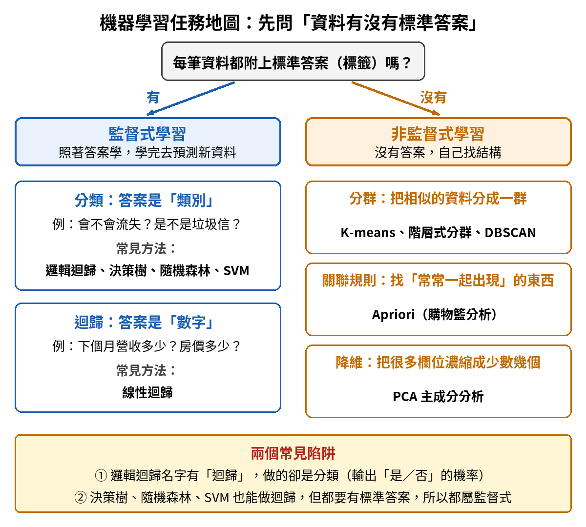
名詞各自定義
監督式學習 Supervised Learning
- 是什麼：用「資料＋標準答案」配對好的資料訓練，學會後去預測新資料的答案。
- 適合：手上有歷史答案的問題，例如去年哪些客戶流失了、過去每間房子賣多少。
- 優缺點：目標明確、可以對答案評分；但要先有大量標好答案的資料，標註很花人力。
非監督式學習 Unsupervised Learning
- 是什麼：資料沒有標準答案，讓電腦自己找結構：分群、關聯、降維。
- 適合：想先探索資料，例如「我的會員可以分成哪幾種人？」
- 優缺點：不用標註；但沒有答案可對，好壞較難判斷，結果要人來解讀。
分類 Classification（監督式）
- 是什麼：預測一個類別。兩類叫二元分類，三類以上叫多元分類。
- 常見方法：邏輯迴歸、決策樹、隨機森林、支持向量機 SVM。
- 評分方式：準確率、精確率、召回率、F1、ROC／AUC（單元 ①）。
迴歸 Regression（監督式）
- 是什麼：預測一個連續的數字，例如下個月營收、房價。
- 常見方法：線性迴歸（決策樹、隨機森林也有迴歸版）。
- 評分方式：RMSE、MAE、R²（L22301 學過）。
分群 Clustering（非監督式）
- 是什麼：沒有答案，依「彼此像不像」分成幾群。分類的類別是事先定好的，分群的群是電腦自己找出來的。
- 常見方法：K-means、階層式分群、DBSCAN（單元 ④）。
關聯規則 Association Rules（非監督式）
- 是什麼：找出「A 出現時，B 也常出現」的規則，最有名的是購物籃分析。
- 常見方法：Apriori（單元 ③）。
降維 Dimensionality Reduction（常見方法 PCA 屬非監督）
- 是什麼：欄位太多時，濃縮成少數幾個新欄位，盡量保留原本的資訊。
- 常見方法：PCA 主成分分析（單元 ⑦）。它不需要標準答案，所以屬於非監督式。
- 小心例外：線性判別分析（Linear Discriminant Analysis）會用到標籤，屬於監督式降維（⑧-3 提到的同名 LDA）。所以「降維」不全是非監督，要看用不用標籤。
邏輯迴歸 Logistic Regression（監督式，做分類）
- 是什麼：名字有「迴歸」，但工作是分類，最常用於二元分類（也可延伸到多元分類，例如 Softmax 迴歸）。
- 怎麼運作：各欄位加權加總成一個分數，用 S 形曲線壓成 0 到 1 的機率，再切門檻（例如 ≥ 0.5）判成「是」或「否」。
- 優缺點：簡單、快、每個欄位的影響方向好解釋；但用原始欄位時，決策邊界是線性的（一條直線或平面），彎曲的分界要先做特徵轉換。
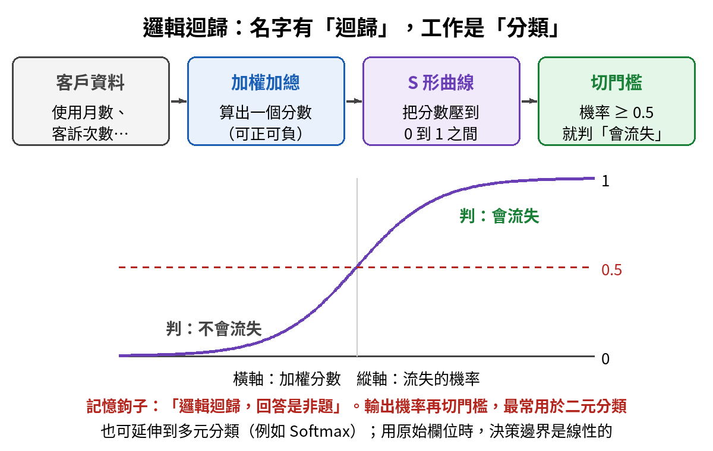
支持向量機 SVM、隨機森林 Random Forest（監督式）
- SVM：在兩類資料中間找一條「離兩邊都最遠」的分界線，主要拿來分類。
- 隨機森林：種很多棵決策樹，每棵看的資料和欄位都不太一樣，最後投票，比單一棵樹穩定。
- 共同點：訓練時都要有標準答案，所以都是監督式。
整合比較表
| 名詞 | 一句話定義 | 特性 | 適用情境 | 關鍵分辨點 | 容易搞混 |
|---|---|---|---|---|---|
| 監督式學習 | 照著標準答案學 | 要有標籤；可對答案評分 | 有歷史答案 | 資料有答案 | 非監督式 |
| 非監督式學習 | 沒答案，自己找結構 | 不用標籤；結果要人解讀 | 先探索資料 | 資料沒答案 | 監督式 |
| 分類 | 預測類別 | 監督式；輸出是／否或 A／B／C | 流失、垃圾信 | 答案是類別 | 分群、迴歸 |
| 迴歸 | 預測數字 | 監督式；輸出連續值 | 營收、房價 | 答案是數字 | 邏輯迴歸（名字像） |
| 分群 | 相似的放一群 | 非監督；群是自己找的 | 客戶分眾 | 類別不是事先定好 | 分類 |
| 關聯規則 | 找常一起出現的 | 非監督；輸出「A → B」規則 | 購物籃、交叉銷售 | 看組合，不預測 | 分群 |
| 降維（PCA） | 多欄濃縮成少欄 | 非監督；保留最多變異 | 欄位太多、視覺化 | 減少欄位數 | 分群 |
| 邏輯迴歸 | 算機率再切門檻分類 | 監督式；S 形曲線；最常見是兩類 | 是非題的預測 | 名字有迴歸，其實是分類 | 線性迴歸 |
- 「有解答本＝監督，沒解答本＝非監督」。
- 「答案是類別＝分類，答案是數字＝迴歸」：看到「是否」「會不會」就是分類。
- 「邏輯迴歸，回答是非題」：名字是迴歸，工作是分類，最常用於二元分類。
- PCA、K-means、Apriori 不需要答案＝非監督；SVM、邏輯迴歸、隨機森林、決策樹要答案＝監督。
單元 ③關聯規則：支持度、信賴度、提升度與 Apriori
為什麼需要它？ 超市想知道「哪些商品常常被一起買」，好決定擺放位置、組合優惠或推薦。可是規則可能有幾萬條，有的只是巧合、有的根本很少發生，所以需要幾個數字來判斷一條規則值不值得用。
一步步搭起來：用 10 張收據算「麵包 → 牛奶」
- 數次數：有麵包 6 張、有牛奶 5 張、兩樣都有 4 張。
- 這個組合常不常見？4 ÷ 10＝40%，這叫支持度。
- 買了麵包的人，有幾成也買牛奶？4 ÷ 6≈66.7%，這叫信賴度。
- 66.7% 算高嗎？不看麵包，本來就有 5 ÷ 10＝50% 的人買牛奶。66.7% ÷ 50%≈1.33，這叫提升度：大於 1，表示買麵包的人買牛奶的比例比平常高（正相關，但不代表是麵包「造成」的）。
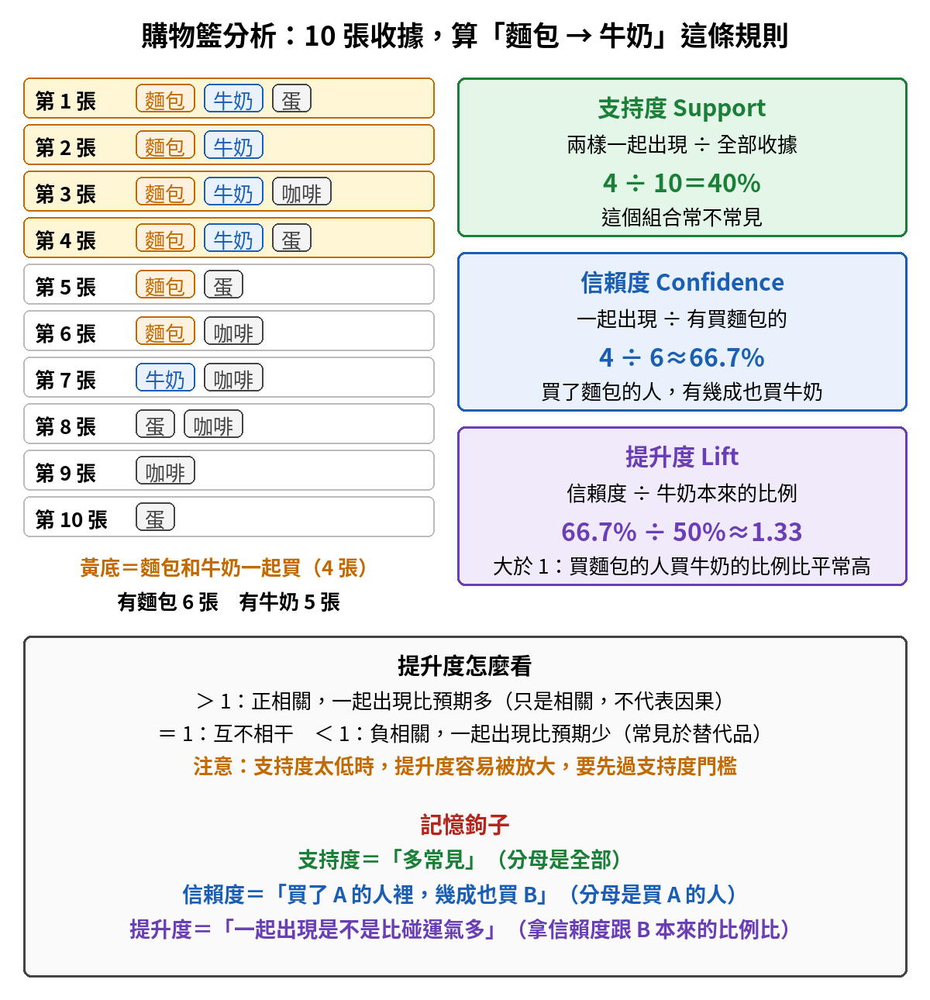
注意方向：信賴度有方向性。反過來算「牛奶 → 麵包」＝4 ÷ 5＝80%，和 66.7% 不一樣；但支持度（40%）和提升度（約 1.33）兩個方向都一樣。
名詞各自定義
支持度 Support
- 是什麼：A 和 B 一起出現的交易，佔全部交易的比例。例子：4 ÷ 10＝40%。
- 用途：先把太少發生的組合篩掉，太罕見的規則沒有商業價值。
- 缺點：只說明常不常見，不說明 A 和 B 有沒有關係。
信賴度 Confidence
- 是什麼：有 A 的交易裡，也有 B 的比例＝一起出現 ÷ 有 A。例子：4 ÷ 6≈66.7%。
- 用途：衡量規則「A → B」有多可靠，也就是條件機率 P(B｜A)。
- 缺點：B 本來就熱賣的話，信賴度自然很高，會誤以為 A 和 B 有關聯，所以要再看提升度。
提升度 Lift
- 是什麼：信賴度 ÷ B 本來被買的比例。例子：66.7% ÷ 50%≈1.33。
- 怎麼看：大於 1＝正相關（一起出現比預期多，不代表因果）；等於 1＝互不相干；小於 1＝負相關（一起出現比預期少，常見於替代品，例如兩個牌子的同款飲料）。
- 優點：排除「B 本來就熱賣」的假象，最能看出真正的關聯。
- 缺點：支持度太低時，提升度容易被放大（只出現一兩次的組合也可能算出很高的提升度），所以要先過支持度門檻再看提升度。
覆蓋率 Coverage
- 是什麼：只看規則的前項 A：有 A 的交易佔全部的比例。例子：麵包 6 ÷ 10＝60%。
- 和信賴度的差別：覆蓋率只問「多少人買 A」，不管 B；信賴度問「買 A 的人裡幾成也買 B」。
Apriori 演算法
- 是什麼：做關聯規則探勘的經典演算法：一層一層找出常一起出現的商品組合（頻繁項目集），再從中產生規則。
- 怎麼運作：先找單一商品，留下過門檻的；再兩兩配對、數次數、篩選；再往三個一組疊上去。關鍵：小組合不常見，包含它的大組合一定也不常見，可以直接剪掉不數。
- 兩道門檻：先用最小支持度篩出頻繁項目集，再用最小信賴度從中挑出規則（提升度通常是挑出規則後再看的評估指標）。
- 優缺點：邏輯簡單好懂；但要反覆掃描資料，商品很多時候選組合爆量（後來有 FP-Growth 等改良）。
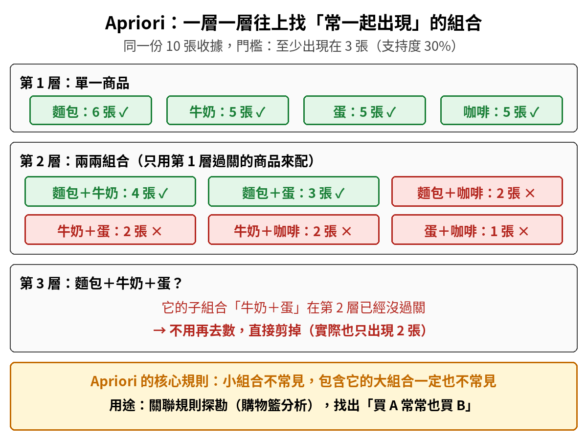
整合比較表
| 名詞 | 一句話定義 | 計算（例子） | 適用情境 | 關鍵分辨點 | 容易搞混 |
|---|---|---|---|---|---|
| 支持度 | 這個組合有多常見 | A 和 B 一起 ÷ 全部（40%） | 先篩掉罕見組合 | 分母是全部交易 | 信賴度 |
| 信賴度 | 買 A 的人裡幾成也買 B | A 和 B 一起 ÷ 有 A（66.7%） | 規則可不可靠 | 分母是買 A 的人；有方向 | 支持度、覆蓋率 |
| 提升度 | A、B 一起出現是否比預期多 | 信賴度 ÷ B 的比例（1.33） | 排除熱賣假象 | 和 1 比；兩方向相同；相關不是因果 | 信賴度 |
| 覆蓋率 | 有多少交易含 A | 有 A ÷ 全部（60%） | 看前項多普遍 | 不管 B | 信賴度 |
| Apriori | 一層層找頻繁組合 | 先過最小支持度、再過最小信賴度；小組合不常見就剪掉 | 購物籃、關聯規則探勘 | 屬關聯規則，非監督 | 分群、分類 |
- 支持度＝「多常見」（分母全部）；信賴度＝「買 A 的人裡，幾成也買 B」（分母是買 A 的人）；提升度＝「一起出現是不是比碰運氣多」（跟 1 比；大於 1 是正相關，不是因果）。
- 聽到「有 A 的人當中，也有 B 的比例」＝信賴度。
- 看到 Apriori，就想到購物籃＝關聯規則探勘。兩道門檻的順序：先支持度、再信賴度。
單元 ④分群方法：K-means 與肘部法則、階層式分群與樹狀圖、DBSCAN
為什麼需要它？ 你有 1 萬名會員的消費紀錄，想知道「他們可以分成哪幾種人」，好設計不同的行銷方式。沒有人事先告訴你答案，只能靠「誰跟誰比較像」來分組，這就是分群。不同方法對「像」的定義不同，適合的資料形狀也不同。
一步步搭起來（先學最常見的 K-means）
- 先決定要分幾群（K），例如 K＝3，隨機放 3 個中心點。
- 每位會員找離自己最近的中心點，加入那一群。
- 每群重新算平均位置，把中心點移過去。
- 重複第 2、3 步，直到中心點不再移動。
K 要選幾？ 群分越多，每群裡的人通常越靠近中心（組內平方和越小，英文 WCSS 或 SSE），分到每人一群時是 0，但那沒有意義。把 K＝1、2、3…的組內平方和畫成曲線，找下降突然變平緩的轉折點，這就是肘部法則。下圖是實際用 K-means 跑出來的：K＝3 之前每多分一群就省很多（1957 → 978 → 248），之後只省一點點（248 → 212 → 183）。
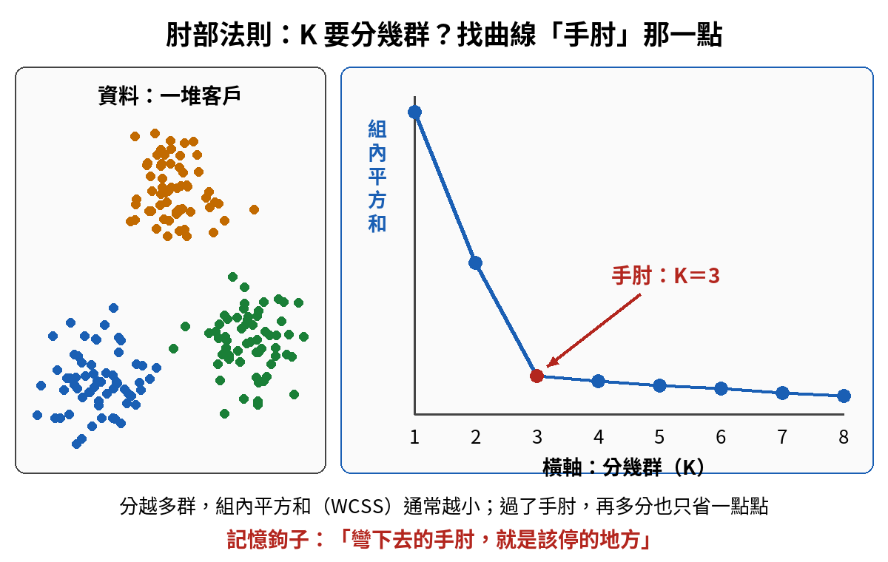
名詞各自定義
K-means（K-平均演算法）
- 是什麼：先指定群數 K，反覆「分到最近中心、重算中心」直到穩定。
- 適合：群大致是圓球狀、大小差不多，而且大概知道要分幾群。
- 優點：簡單、速度快，資料量大也跑得動。
- 缺點：要事先給 K；結果受初始中心影響；不擅長彎曲或不規則形狀；每個點都會被硬塞進某一群。
肘部法則 Elbow Method
- 是什麼：幫 K-means 選 K 的方法：畫「K 對組內平方和（WCSS／SSE，每個點到所屬群中心距離的平方加總）」的曲線，選轉折那一點。
- 缺點：曲線很平滑時看不出手肘，可改看輪廓係數等指標。
輪廓係數 Silhouette Coefficient
- 是什麼：替每個點打分：a＝它到同群其他點的平均距離，b＝它到最近的另一群的平均距離，輪廓係數＝(b − a) ÷ max(a, b)。
- 範圍：−1 到 1。接近 1＝分得很好（離自己群近、離別群遠）；接近 0＝落在兩群交界；負的＝可能分錯群。
- 用途：把全部點的平均輪廓係數拿來比，挑分數最高的 K；肘部法則看不出手肘時特別好用。
階層式分群 Hierarchical Clustering
- 是什麼：一開始每個點自己一群，每次把最近的兩群合併，一路合到剩一群（凝聚式）；也有由上往下一路分裂的分裂式。
- 產出：一張樹狀圖 Dendrogram：越低處合併的越像。在不同高度橫切一刀，就得到不同群數。
- 優缺點：不用事先決定 K、樹狀圖好解釋；但要算所有點兩兩的距離，資料一大就很慢。
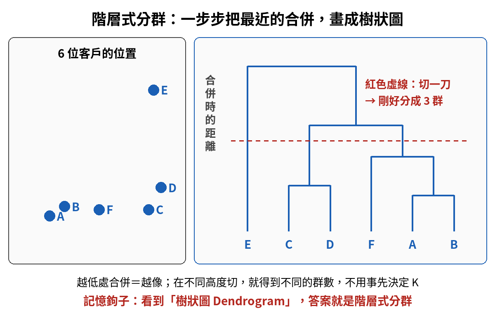
上圖用「兩群中最近兩點的距離」（單一連結）實際算出：A＋B 先合（0.67），C＋D 次之（0.86），F 再併入 A、B（1.40）。紅線切在 1.40 和 2.00 之間，剛好分成 3 群：｛A、B、F｝、｛C、D｝、｛E｝。
DBSCAN（以密度為基礎的分群）
- 是什麼：看密度分群：一個點周圍（半徑 eps 內）至少有 minPts 個點，就是核心點；核心點彼此相連，一路長成一群。
- 三種點：核心點、邊界點（在核心點旁，自己周圍不夠密）、雜訊點（哪群都不屬於）。
- 適合：形狀不規則（彎月、長條），而且有雜訊的資料。
- 優點：不用給 K；能分出任意形狀；雜訊點不會被硬塞進群裡。
- 缺點：eps 和 minPts 要調；各群密度差很多時難處理；維度很高時距離失去鑑別力，效果變差。
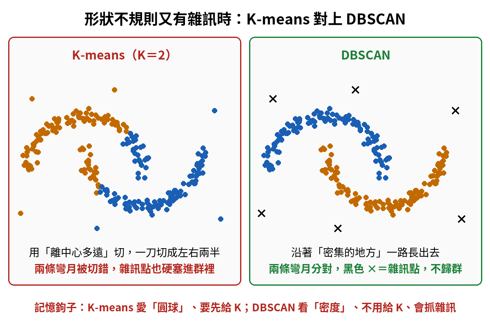
高斯混合模型 GMM（對照用）
- 是什麼：假設資料由幾座「鐘形山」疊起來，算出每個點屬於每座山的機率（軟分群）。
- 和 K-means 的差別：K-means 每點只屬於一群、群偏圓；GMM 給機率，群可以是橢圓。它不產生樹狀圖。
整合比較表
| 名詞 | 一句話定義 | 特性 | 適用情境 | 關鍵分辨點 | 容易搞混 |
|---|---|---|---|---|---|
| K-means | 反覆找最近中心 | 要先給 K；群偏圓球；快 | 大量資料、球狀群 | 要給 K；每點都被分進群 | DBSCAN、GMM |
| 肘部法則 | 幫 K-means 選 K | 看組內平方和曲線的轉折 | 不知道分幾群 | 選 K 的方法 | 交叉驗證、網格搜尋、梯度下降 |
| 輪廓係數 | 每個點分得好不好的分數 | −1 到 1，越接近 1 越好 | 評估分群、挑 K | 同時看群內近、群間遠 | 肘部法則 |
| 階層式分群 | 最近的兩群一路合併 | 不用給 K；產出樹狀圖 | 中小型資料、要看層次 | 樹狀圖 Dendrogram | K-means |
| DBSCAN | 沿著密集處長成群 | 不用給 K；可抓雜訊 | 形狀不規則、有雜訊 | 密度＋雜訊點 | K-means |
| GMM | 每點屬於各群的機率 | 軟分群；群可為橢圓 | 群有重疊 | 給機率 | K-means |
- K-means 愛「圓球」、要先給 K；選 K 用「肘部法則」：彎下去的手肘，就是該停的地方。
- 看到「樹狀圖 Dendrogram」＝階層式分群。
- 看到「形狀不規則」「雜訊點 Noise」＝DBSCAN。
單元 ⑤檢定方法怎麼選：單一樣本 t、獨立樣本 t、配對樣本 t、ANOVA
為什麼需要它？ L22301 學過：每種檢定只適合一種資料。這一章把「比較平均數」再細分：同樣是比兩組平均，兩組是不是同一批人，用的檢定就不一樣。選錯了，算出來的 P 值不可信。
一步步搭起來
- 在比什麼？比「比例」（轉換率）→ 卡方或比例 Z 檢定；比「平均數」→ 往下走。
- 有幾組？1 組跟一個已知數字比 → 單一樣本 t；2 組 → 往下走；3 組以上 → ANOVA（各組是不同的人；同一批人量三次以上要用重複量數 ANOVA）。
- 兩組是同一批人量兩次嗎？是（同一班期中、期末）→ 配對樣本 t；不是（A 班、B 班）→ 獨立樣本 t。
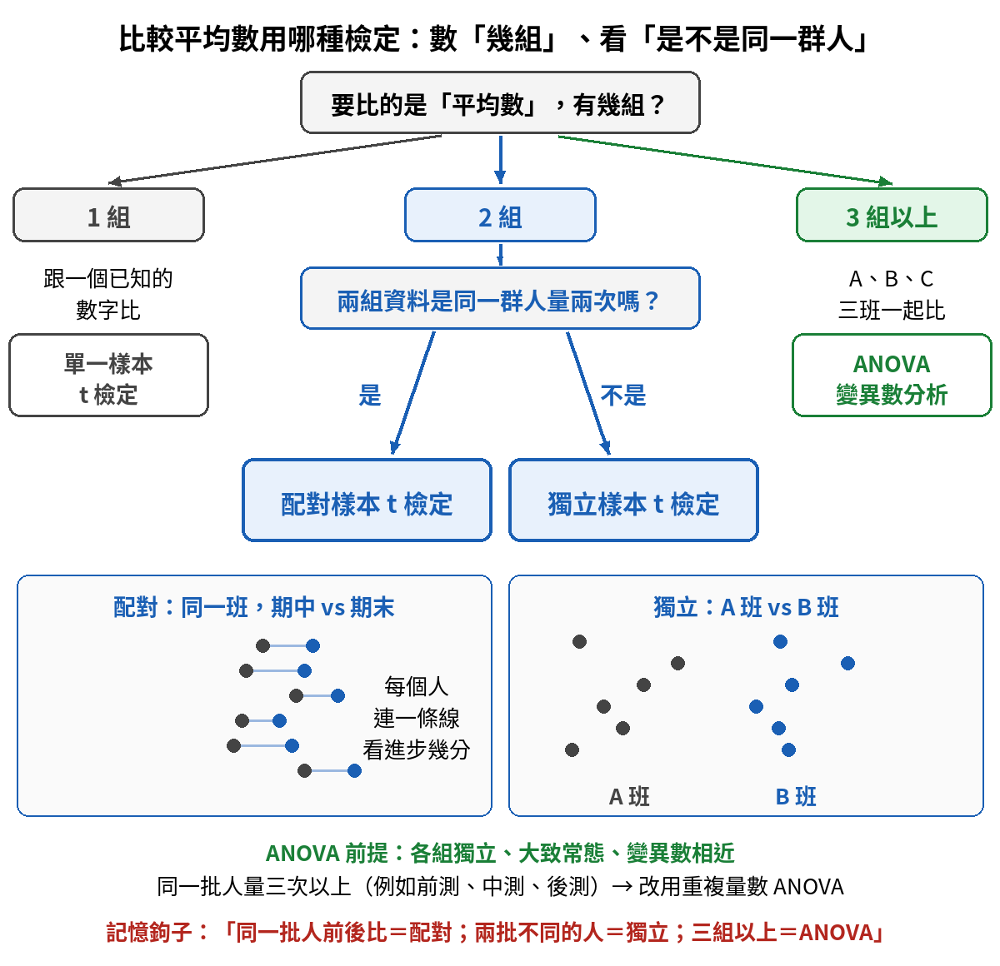
為什麼配對要分開算？ 同一個人前後兩次分數有關聯（本來就強的人兩次都高）。配對 t 檢定先算每個人的「進步分數」，只看進步的部分，把個人程度差異排除，所以更敏銳。兩批不同的人沒有一對一的配對，只能用獨立樣本 t。
名詞各自定義
單一樣本 t 檢定
- 是什麼：一組資料的平均，和一個已知的數字比較。例：本店平均客單價是否不同於公司目標 500 元。
- 前提：資料大致常態，或樣本數夠大。
獨立樣本 t 檢定 Independent Samples t-test
- 是什麼：比較兩組不同的人的平均數有沒有顯著差異。例：A 班和 B 班的平均成績。
- 前提：兩組彼此獨立、資料大致常態；兩組變異數差很多時改用 Welch 版本。
- 優缺點：最常用、好理解；但只能比兩組。
配對樣本 t 檢定 Paired Samples t-test
- 是什麼：比較同一批人（或一對一配好的對象）量兩次的平均數。例：同一班期中 vs 期末、同一批病人吃藥前 vs 吃藥後。
- 怎麼運作：先算每個人的差值（後 − 前），再檢定差值的平均是不是 0。
- 優點：排除個人原本程度的差異，比較容易看出真正的變化。
變異數分析 ANOVA
- 是什麼：比較三組以上的平均數是否全部相同。例：北、中、南三家分店的平均業績。
- 為什麼不兩兩做 t 檢定：三組要做 3 次，次數一多誤判機率就膨脹（多重檢定）。ANOVA 一次就好。
- 前提：各組彼此獨立、資料大致常態、各組變異數相近。
- 同一批人量三次以上：例如同一批員工前測、中測、後測，各組不獨立，要改用重複量數 ANOVA（概念上是配對 t 的多組版）。
- 缺點：只告訴你「至少有一組不同」，要知道是哪一組，還要做事後比較。
卡方檢定 Chi-squared test（對照用）
- 是什麼：處理類別資料的次數，例如兩組的轉換「有／沒有」比例是否不同、兩個類別變數有沒有關聯。
- 和 t 檢定的差別：t 檢定比平均數，卡方比次數或比例。
整合比較表
| 名詞 | 一句話定義 | 特性 | 適用情境 | 關鍵分辨點 | 容易搞混 |
|---|---|---|---|---|---|
| 單一樣本 t | 一組平均 vs 已知數字 | 只有一組資料 | 跟目標值、標準值比 | 只有 1 組 | 獨立 t |
| 獨立樣本 t | 兩批不同人的平均比較 | 兩組互不相干 | A 班 vs B 班 | 不同的人 | 配對 t |
| 配對樣本 t | 同一批人前後的平均比較 | 先算每人差值 | 期中 vs 期末、前測後測 | 同一批人量兩次 | 獨立 t |
| ANOVA | 三組以上平均比較 | 一次檢定；需事後比較；前提：獨立、常態、變異數相近 | 三家分店、三種版本 | 3 組以上 | 多次 t 檢定 |
| 卡方檢定 | 類別次數或比例比較 | 看次數，不看平均 | 轉換率、有／無 | 比比例不是平均 | t 檢定 |
- 「同一批人前後比＝配對；兩批不同的人＝獨立；三組以上＝ANOVA；比例＝卡方。」同一批人量三次以上＝重複量數 ANOVA。
- 讀情境先圈兩個字：「同一」還是「兩組」。
單元 ⑥決策樹與過擬合：深度、最小樣本數、剪枝、max_features
為什麼需要它？ 決策樹是一連串「是／否」問題組成的判斷流程，像醫生問診：「客訴超過 3 次嗎？是 → 用不到 6 個月嗎？是 → 判會流失」。它很好懂，但有個壞習慣：一直問下去，它能把訓練資料每一筆都答對，連巧合都背下來，換一批新資料就失準，這叫過擬合（L22301 的高方差那一邊）。所以要幫它裝「剎車」。
一步步搭起來
- 樹怎麼長？每一步挑一個最能把資料分乾淨的問題（欄位＋門檻），分成兩堆，再對每一堆繼續問。
- 不管它會怎樣？一直分到每片葉子只剩一兩個人，訓練資料全部答對。
- 問題在哪？那些很細的規則，很多只是這批資料的巧合，對新客戶沒用。
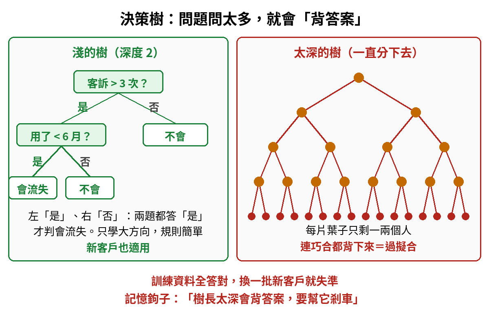
- 裝剎車：讓樹「更簡單、更保守」的設定都是剎車。
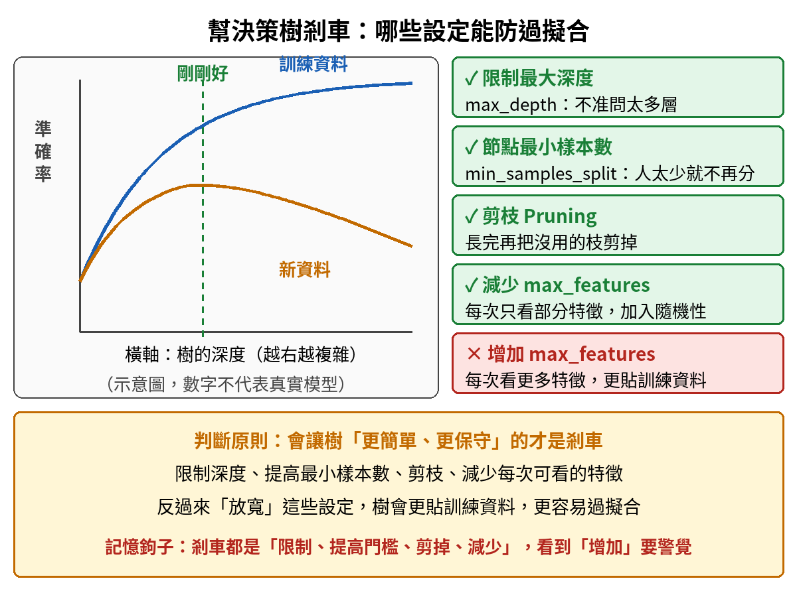
名詞各自定義
決策樹 Decision Tree
- 是什麼：用一層層「是／否」問題來分類或預測的模型，屬於監督式，分類、迴歸都能做。
- 優點：像流程圖，最好解釋；數值、類別欄位都能用，不用先標準化。
- 缺點：很容易過擬合；資料稍變，整棵樹可能完全不同（不穩定），所以常改用隨機森林。
過擬合 Overfitting
- 是什麼：把訓練資料（包括雜訊和巧合）背得太熟，訓練表現很好，新資料表現很差。
- 訊號：訓練準確率很高，測試準確率明顯較低。
限制最大深度 max_depth
- 是什麼：規定樹最多只能問幾層。
- 效果：層數少、規則粗，比較不會背到細節，是剎車。
節點分裂最小樣本數 min_samples_split
- 是什麼：一個節點至少要有幾筆資料，才准再往下分。
- 效果：人太少就不再分，避免為了一兩個人特地長出一條規則，是剎車。
剪枝 Pruning
- 是什麼：把樹上對新資料沒幫助的枝幹剪掉。可以長的時候提早停（預剪枝），或長完再剪（後剪枝）。
- 效果：讓樹變簡單，是防過擬合的標準做法。
最大特徵數 max_features
- 是什麼：每次分裂時，最多只能從幾個欄位裡挑問題。
- 效果：減少它，每次只看一部分欄位、加入隨機性，比較不會過度貼合（隨機森林就靠這招）；增加它，樹每次都挑最貼合訓練資料的欄位，反而更容易過擬合，所以不是剎車。
整合比較表
| 名詞 | 一句話定義 | 特性 | 適用情境 | 關鍵分辨點 | 容易搞混 |
|---|---|---|---|---|---|
| 決策樹 | 一層層是非題做判斷 | 好解釋；易過擬合 | 要說得出理由的預測 | 監督式；分類迴歸都能做 | 隨機森林 |
| 過擬合 | 背太熟，新資料失準 | 訓練好、測試差 | 模型太複雜時 | 高方差那一邊 | 欠擬合 |
| 限制最大深度 | 最多問幾層 | 調小＝更簡單 | 樹太深時 | 限制＝剎車 | max_features |
| 最小分裂樣本數 | 人太少就不再分 | 調大＝更保守 | 葉子太碎時 | 提高門檻＝剎車 | 最大深度 |
| 剪枝 | 剪掉沒用的枝 | 預剪枝或後剪枝 | 樹長完太複雜 | 剪掉＝剎車 | 限制深度 |
| max_features | 每次分裂可看的欄位數 | 減少＝加隨機性 | 隨機森林常用 | 減少才是剎車，增加不是 | max_depth |
- 「樹長太深會背答案，要幫它剎車。」
- 剎車都是「限制、提高門檻、剪掉、減少」，看到「增加」要警覺。
單元 ⑦PCA 主成分分析：找變異數最大的方向
為什麼需要它？ 資料有 100 個欄位時，很多欄位其實在講同一件事（例如身高和體重常常一起變大）。欄位太多會讓模型變慢、難畫圖，還會有共線性問題（單元 ⑧）。PCA 的想法是：找出幾個「新方向」，用少數幾個新欄位就保留大部分的資訊。
一步步搭起來
- 什麼叫「資訊」？某個欄位每個人都一樣，就沒辦法分辨任何人，等於沒有資訊。資料在某個方向上散得越開（變異數越大），越能分辨彼此，資訊越多。
- 找最散的方向：在資料雲裡轉一圈，找投影後變異數最大的方向，這是第 1 主成分。
- 找第二散的方向：要和第 1 主成分垂直、變異數次大，這是第 2 主成分，依此類推。
- 只留前幾個：下圖的例子，第 1 主成分就保留約 96% 的變異，兩個欄位可以濃縮成一個。
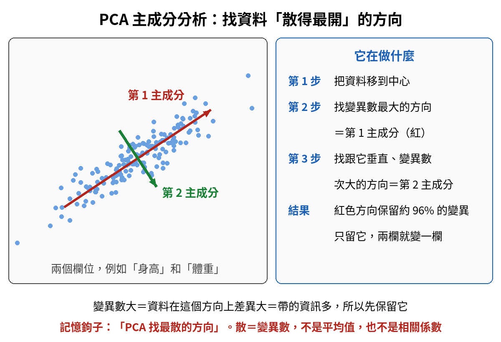
名詞各自定義
主成分分析 PCA
- 是什麼：一種降維方法：把原本的欄位重新組合成幾個互相垂直的新方向（主成分），依變異數由大到小排列，只留前面幾個。
- 屬於：非監督式學習（不需要標準答案）。
- 優點：減少欄位、加快模型、方便畫圖；主成分彼此不相關，可以解決多重共線性。
- 缺點：主成分是原欄位的混合，很難解釋代表什麼；欄位單位不同要先標準化；只抓直線型關係。
變異數 Variance
- 是什麼：資料離平均值散得多開。PCA 要最大化的就是它。
解釋變異比例
- 是什麼：某個主成分保留了原本總變異的幾成，用來決定要留幾個主成分。例子：第 1 主成分約 96%。
容易混進來的其他名詞
- 平均值：資料的中心。PCA 第一步會先把資料移到平均值，但那不是它要找的東西。
- 相關性：兩個欄位一起變化的程度。PCA 是利用欄位之間的共變異來計算，但它最大化的是變異數，不是相關性。
- 偏度：分布左右對不對稱，和 PCA 無關。
整合比較表
| 名詞 | 一句話定義 | 特性 | 適用情境 | 關鍵分辨點 | 容易搞混 |
|---|---|---|---|---|---|
| PCA | 找最散的方向來降維 | 非監督；主成分互相垂直 | 欄位太多、共線性、視覺化 | 最大化變異數 | 分群、LDA |
| 主成分 | 重新組合出的新方向 | 依變異數由大到小排 | 取前幾個代表全部 | 第 1 個最散 | 原始欄位 |
| 變異數 | 資料散得多開 | 越大資訊越多 | PCA 的目標 | PCA 要最大化的 | 相關性、平均值 |
| 相關性 | 兩欄一起變化的程度 | −1 到 1 | 看兩變數關係 | PCA 的原料，不是目標 | 變異數 |
- 「PCA 找最散的方向」。散＝變異數，不是平均值，也不是相關係數。
- PCA＝降維方法＝非監督式。（線性判別分析也能降維，但要用標籤，屬監督式。）
單元 ⑧零散觀念快記：3V 與 5V、中心性、LDA 主題模型、多重共線性
為什麼放在一起？ 這四個觀念彼此獨立，但都是「名詞對定義」的考法。每個都先講為什麼需要，再定義、比較。
⑧-1 大數據的 3V 與 5V
為什麼需要它？ 「大數據」不是只有「資料很多」。業界用幾個 V 開頭的英文字描述它和一般資料的差別，最基本的是 3V，後來擴充成 5V。最常見的陷阱，是把後來加的 V 混進原始 3V 裡。
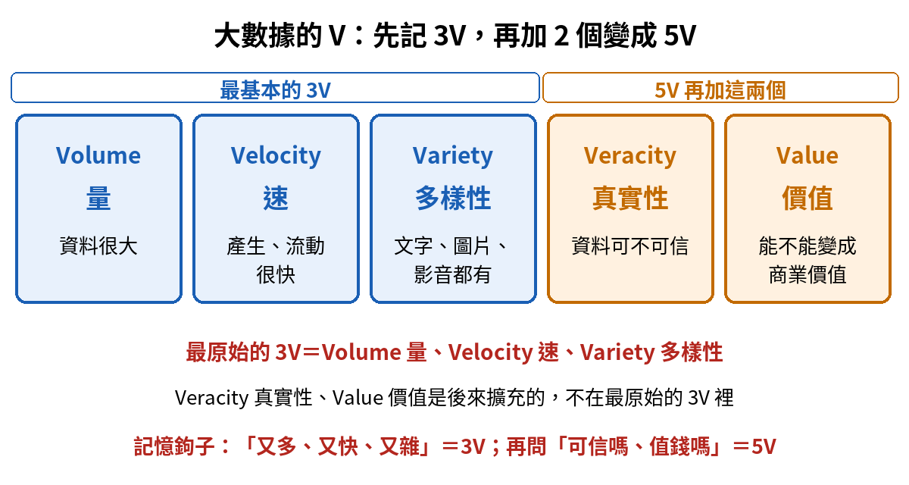
| V | 中文 | 一句話定義 | 屬於 |
|---|---|---|---|
| Volume | 量 | 資料量非常大 | 3V |
| Velocity | 速 | 資料產生、流動、需要處理的速度很快 | 3V |
| Variety | 多樣性 | 資料型態很多：表格、文字、圖片、影音、感測器 | 3V |
| Veracity | 真實性 | 資料可不可信、有沒有雜訊或錯誤 | 5V 擴充 |
| Value | 價值 | 資料能不能轉成商業價值 | 5V 擴充 |
Validity 有效性偶爾出現在更多 V 的版本裡，也不是原始 3V。
- 「又多、又快、又雜」＝3V；再問「可信嗎、值錢嗎」＝5V。
⑧-2 社群網路分析：中心性
為什麼需要它？ 社群網路分析把「人」畫成點、「關係」畫成線。行銷最想知道：誰是關鍵人物？找到他，訊息就傳得最快最廣。衡量「一個點有多重要」的指標統稱中心性；其他幾個名詞描述的是「關係網長什麼樣子」。
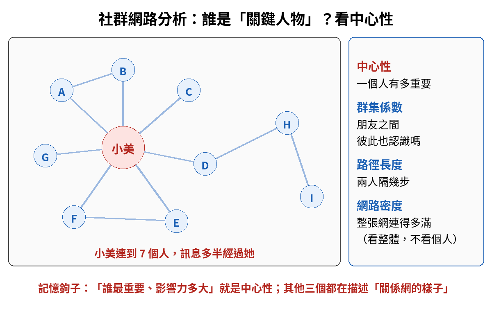
用上圖算一次：圖中共 10 人、11 條線。
中心性 Centrality
- 是什麼：衡量一個點在網路中有多重要、多有影響力的一群指標。
- 常見種類：度中心性（直接連了幾個人）；中介中心性（多少人之間的最短路徑要經過他，像橋樑）；接近中心性（到其他所有人平均有多近）。
- 例子：小美直接連 7 人，度中心性＝7 ÷ 9≈0.78（9＝除了她以外的人數），全網最高。
群集係數 Clustering Coefficient
- 是什麼：一個人的朋友之間，彼此也是朋友的比例，看圈子緊不緊密。
- 例子：小美的 7 個朋友兩兩配對有 21 種組合，實際互相認識的只有 A–B、E–F 兩對，群集係數＝2 ÷ 21≈0.10。她很重要，但朋友彼此不太熟。
路徑長度 Path Length
- 是什麼：兩個點之間最少要經過幾條線。例：G → 小美 → D → H → I，共 4 步。
網路密度 Network Density
- 是什麼：實際線數 ÷ 所有可能的線數，看整張網連得多滿。例：11 ÷ 45≈0.24。它描述整體，不描述個人。
| 名詞 | 一句話定義 | 看的對象 | 關鍵分辨點 | 容易搞混 |
|---|---|---|---|---|
| 中心性 | 一個點有多重要 | 單一個點 | 問「誰最重要、影響力」 | 群集係數 |
| 群集係數 | 朋友之間彼此也認識的比例 | 一個點的朋友圈 | 問「圈子多緊密」 | 中心性 |
| 路徑長度 | 兩點之間隔幾步 | 兩個點 | 問「距離」 | 密度 |
| 網路密度 | 整張網連得多滿 | 整張網 | 問「整體連結程度」 | 群集係數 |
- 「誰最重要、影響力多大」就是中心性；其他三個都在描述「關係網的樣子」。
⑧-3 LDA 主題模型
為什麼需要它？ 你有 10 萬則顧客留言，不可能一篇篇讀。想知道「大家都在聊哪些主題」，就要讓電腦從字詞的共同出現裡自己整理出主題。LDA（潛在狄利克雷分佈）就是最常用的主題模型。
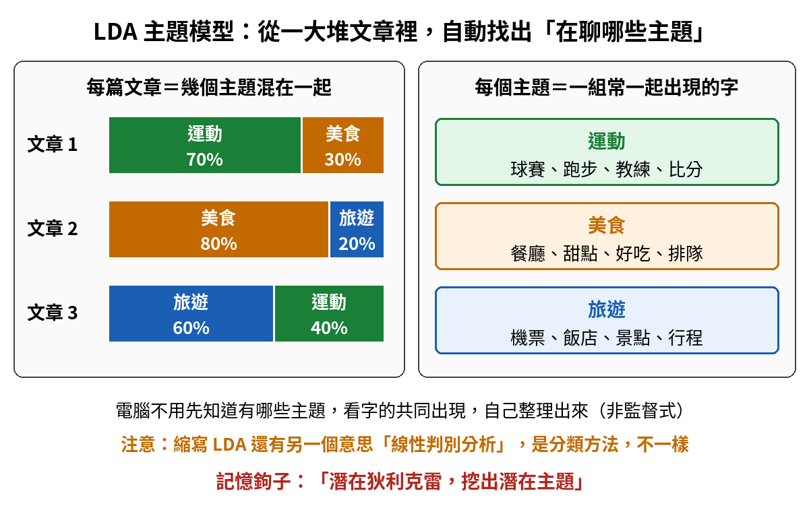
LDA 潛在狄利克雷分佈 Latent Dirichlet Allocation
- 是什麼：一種機率模型，假設每篇文章是幾個主題的混合、每個主題是一組常一起出現的字，從大量文章反推出這些主題。
- 屬於：非監督式，用途是主題模型 Topic Modeling。
- 優缺點：能快速掌握大量文字的主軸；但主題數要自己設，找出的主題還要人來命名、解讀。
- 小心同名：LDA 也是「線性判別分析 Linear Discriminant Analysis」的縮寫，那是監督式的分類／降維方法。出現「狄利克雷」就是主題模型。
| 任務 | 一句話定義 | 和 LDA 主題模型的差別 |
|---|---|---|
| 主題模型 | 從大量文章找出「在聊哪些主題」 | LDA 就是做這個 |
| 情感分析 | 判斷一段文字是正面還是負面 | 看「態度」，不是「主題」 |
| 序列標註 | 替句子裡每個字詞貼標籤（例如標出人名、地名） | 逐字標記，不是整篇歸納 |
| 機器翻譯 | 把一種語言轉成另一種語言 | 輸出另一種語言的句子 |
- 「潛在狄利克雷，挖出潛在主題」。
⑧-4 多重共線性
為什麼需要它？ 做迴歸時，我們想知道「每個欄位對結果有多少影響」。但如果兩個輸入欄位幾乎在講同一件事（例如坪數和房間數），模型就分不清功勞該算誰的，算出來的係數忽大忽小、甚至正負號顛倒，很難解釋。
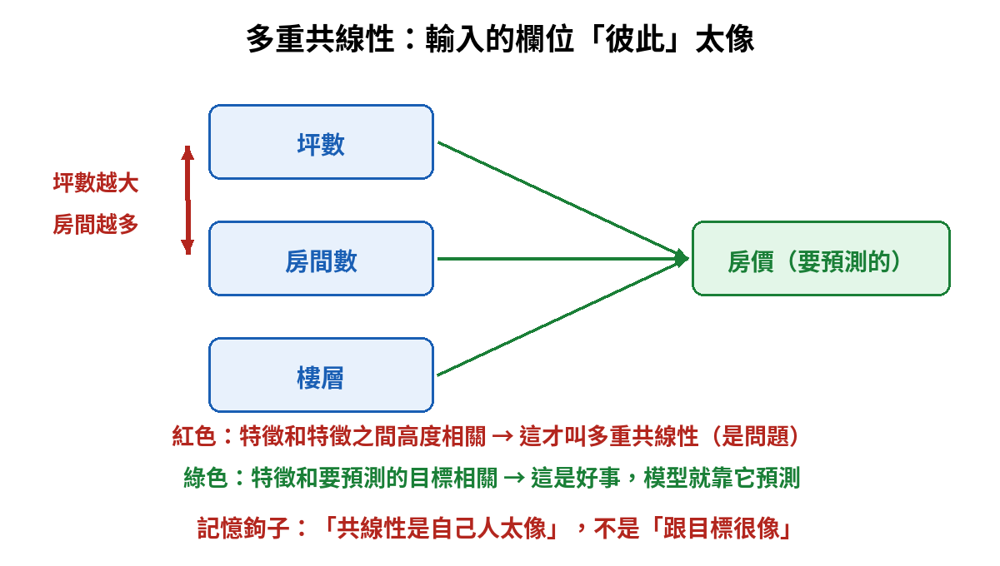
多重共線性 Multicollinearity（兩個時叫共線性）
- 是什麼：模型裡兩個或多個輸入特徵之間高度相關。
- 造成什麼問題：個別係數不穩定、標準誤變大、難解釋單一欄位的影響；但對整體預測準不準，影響往往不大。
- 怎麼發現：看欄位之間的相關係數矩陣，或算變異數膨脹因子 VIF（常見警戒線大於 10，有些人用 5）。
- 怎麼處理：刪掉其中一個、合併成一個指標、用 PCA 轉成不相關的主成分，或用 Ridge 等正規化方法。
| 現象 | 一句話定義 | 是不是共線性 | 說明 |
|---|---|---|---|
| 特徵和特徵高度相關 | 輸入欄位彼此太像 | 是 | 這就是多重共線性 |
| 特徵和目標高度相關 | 輸入欄位和要預測的結果有關 | 不是 | 這是好事，模型靠它預測 |
| 殘差之間有相關 | 預測誤差彼此有規律 | 不是 | 這叫自相關，常見於時間序列 |
| 大量異常值 | 有很多極端的資料點 | 不是 | 這是離群值問題 |
- 「共線性是自己人太像，不是跟目標很像」。
總整理本章要記的十句話
- 精確率＝我說是的裡面真的是幾個（TP÷(TP＋FP)）；召回率＝真的是的裡面我抓到幾個（TP÷(TP＋FN)）。
- ROC：橫軸 FPR、縱軸 TPR，「橫錯縱對」；精確率對召回率是 PR 曲線；準確率、F1 不是 ROC／PR 曲線的軸。
- 類別不平衡時，準確率會騙人，要看精確率、召回率或 F1。
- 有標準答案＝監督；答案是類別＝分類、是數字＝迴歸；邏輯迴歸雖叫迴歸，做的是分類（最常用於二元分類）。
- PCA、K-means、Apriori 不需要答案（非監督）；SVM、邏輯迴歸、決策樹、隨機森林需要答案（監督）。
- 支持度＝多常見；信賴度＝買 A 的人裡幾成也買 B；提升度＞1＝正相關（不代表因果）、＜1＝負相關（常見於替代品）。Apriori＝關聯規則探勘。
- K-means 要先給 K，用肘部法則選；樹狀圖＝階層式；形狀不規則又有雜訊＝DBSCAN。
- 同一批人前後比＝配對 t；兩批不同人＝獨立 t；三組以上＝ANOVA（前提：各組獨立、大致常態、變異數相近；同一批人量三次以上用重複量數 ANOVA）；比例＝卡方。
- 決策樹防過擬合：限制深度、提高最小分裂樣本數、剪枝、減少 max_features；「增加」不是剎車。
- PCA 找變異數最大的方向；3V＝量、速、多樣性；中心性＝重要性；LDA＝主題模型；共線性＝特徵彼此太像。
考前速查全章名詞總彙整表
把八個單元的比較表濃縮成一張。複習時遮住右邊三欄，看名詞說得出定義，再對照。
| 名詞 | 一句話定義 | 口訣 | 容易跟誰搞混 |
|---|---|---|---|
| 單元 ① 分類評估指標 | |||
| 準確率 | 全部人裡猜對幾成 | 分母是全部 | F1 |
| 精確率 | 模型說是的裡，真的是幾成 | 我說是的，有幾個真的是 | 召回率 |
| 召回率／TPR | 真的是的裡，抓到幾成 | 真的是的，我抓到幾個 | 精確率 |
| FPR | 真的否的裡，被誤報幾成 | 誤報率，ROC 的橫軸 | 精確率 |
| F1 | 精確率與召回率的調和平均 | 兩邊都顧的和事佬 | 準確率 |
| ROC 曲線 | 橫軸 FPR、縱軸 TPR | 橫錯縱對，左上最好 | PR 曲線 |
| PR 曲線 | 橫軸召回率、縱軸精確率 | 正類稀少時看它 | ROC 曲線 |
| 單元 ② 任務類型 | |||
| 監督式學習 | 照著標準答案學 | 有解答本 | 非監督式 |
| 非監督式學習 | 沒答案，自己找結構 | 沒解答本 | 監督式 |
| 分類 | 預測類別 | 答案是類別 | 分群、迴歸 |
| 迴歸 | 預測數字 | 答案是數字 | 邏輯迴歸 |
| 邏輯迴歸 | 算機率再切門檻分類（最常見是兩類） | 邏輯迴歸，回答是非題 | 線性迴歸 |
| 分群 | 相似的放一群，群不是事先定好 | 物以類聚 | 分類 |
| 降維 | 多欄位濃縮成少欄位（PCA 非監督；線性判別分析要標籤） | 化繁為簡 | 分群 |
| 單元 ③ 關聯規則 | |||
| 支持度 | A 和 B 一起出現 ÷ 全部 | 多常見 | 信賴度 |
| 信賴度 | A 和 B 一起出現 ÷ 有 A | 買 A 的人裡幾成也買 B | 支持度、覆蓋率 |
| 提升度 | 信賴度 ÷ B 本來的比例 | 跟 1 比，大於 1＝正相關、小於 1＝負相關 | 信賴度 |
| 覆蓋率 | 有 A ÷ 全部 | 只看 A，不管 B | 信賴度 |
| Apriori | 一層層找頻繁組合 | 看到 Apriori 想到購物籃 | 分群演算法 |
| 單元 ④ 分群方法 | |||
| K-means | 反覆分到最近中心 | 愛圓球、要先給 K | DBSCAN |
| 肘部法則 | 選 K 的方法 | 彎下去的手肘就停 | 交叉驗證、梯度下降 |
| 輪廓係數 | 每個點分得好不好的分數 | −1 到 1，越接近 1 越好 | 肘部法則 |
| 階層式分群 | 最近兩群一路合併 | 看到樹狀圖就是它 | K-means |
| DBSCAN | 沿密集處長成群，標出雜訊 | 看密度、抓雜訊、不用給 K | K-means |
| GMM | 每點屬於各群的機率 | 給機率的軟分群 | K-means |
| 單元 ⑤ 檢定方法 | |||
| 單一樣本 t | 一組平均 vs 已知數字 | 只有 1 組 | 獨立 t |
| 獨立樣本 t | 兩批不同人的平均 | 兩批不同的人 | 配對 t |
| 配對樣本 t | 同一批人前後的平均 | 同一批人前後比 | 獨立 t |
| ANOVA | 三組以上平均（各組獨立） | 三組以上；同一批人量多次用重複量數 | 多次 t 檢定 |
| 卡方檢定 | 類別次數或比例 | 比例找卡方 | t 檢定 |
| 單元 ⑥ 決策樹與過擬合 | |||
| 過擬合 | 背太熟，新資料失準 | 訓練好、測試差 | 欠擬合 |
| 限制最大深度 | 最多問幾層 | 限制＝剎車 | max_features |
| 最小分裂樣本數 | 人太少就不再分 | 提高門檻＝剎車 | 最大深度 |
| 剪枝 | 剪掉沒用的枝 | 剪掉＝剎車 | 限制深度 |
| max_features | 每次分裂可看幾個欄位 | 減少才是剎車，增加不是 | max_depth |
| 單元 ⑦ PCA | |||
| PCA | 找變異數最大的方向來降維 | PCA 找最散的方向 | 相關性、分群 |
| 單元 ⑧ 零散觀念 | |||
| 3V | 量、速、多樣性 | 又多、又快、又雜 | 5V 的真實性、價值 |
| 中心性 | 一個點有多重要 | 誰最重要 | 群集係數 |
| 群集係數 | 朋友之間彼此也認識的比例 | 圈子多緊密 | 中心性 |
| 網路密度 | 整張網連得多滿 | 看整體不看個人 | 群集係數 |
| LDA（主題模型） | 從文章找出主題 | 潛在狄利克雷，挖出潛在主題 | 線性判別分析 |
| 多重共線性 | 輸入特徵彼此高度相關 | 自己人太像 | 特徵和目標相關 |
動手練自我檢測 10 題
自編情境練習，練的是「看情境選名詞」。先自己想好答案，再點「看答案」。
- 醫院用模型篩檢癌症，最怕漏掉真正生病的人。這時最該重視哪一個指標？
看答案
召回率（TPR）。漏抓代價高，要問「真的生病的人，抓到幾個」。
- 公司信箱的垃圾信過濾器，最怕把客戶的重要來信誤判成垃圾信。這時最該重視哪一個指標？
看答案
精確率。誤報代價高，要問「我說是垃圾信的，真的是幾封」。
- 模型判定 80 筆交易是詐騙，其中 60 筆真的是詐騙；全部資料裡真正的詐騙共有 100 筆。精確率和召回率各是多少？
看答案
精確率＝60 ÷ 80＝0.75；召回率＝60 ÷ 100＝0.60。精確率的分母是「模型說是」的 80 筆，召回率的分母是「真的是」的 100 筆。
- 畫 ROC 曲線時，橫軸和縱軸各放什麼？曲線越靠哪一個角落代表模型越好？
看答案
橫軸偽陽性率 FPR、縱軸真陽性率 TPR，越靠左上角越好（誤報少、抓得多）。
- 想用過去的資料預測「明天的最高氣溫是幾度」，這屬於哪一種機器學習任務？
看答案
迴歸（監督式）。答案是一個數字。
- 電商有 5 萬名會員的消費紀錄，想讓電腦自動把會員分成幾種類型，事先沒有任何分類答案。這屬於哪一類學習？可以用什麼方法？
看答案
非監督式學習的分群。5 萬筆資料量大，最適合用 K-means（再用肘部法則或輪廓係數選要分幾群）；階層式分群要算所有點兩兩的距離，資料這麼大會很慢，除非先抽樣。
- 100 張收據中，有 20 張買了尿布，其中 12 張也買了啤酒；全部有 30 張買了啤酒。請算「尿布 → 啤酒」的支持度、信賴度、提升度。
看答案
支持度＝12 ÷ 100＝12%；信賴度＝12 ÷ 20＝60%；提升度＝60% ÷ 30%＝2.0。提升度大於 1，買尿布的人買啤酒的機會是平常的 2 倍。
- 門市的顧客位置資料，分布成彎彎曲曲的帶狀，還夾雜一些零星的亂點。用 K-means 還是 DBSCAN 比較適合？為什麼？
看答案
DBSCAN。形狀不規則、有雜訊點，DBSCAN 沿著密集處分群並把亂點標成雜訊；K-means 只會切出圓球狀的群，還會把亂點硬塞進群裡。
- 同一批 30 位員工，受訓前、受訓後各考一次，想知道分數有沒有進步，用哪一種檢定？如果改成比較台北、台中、高雄三家分店的平均業績呢？
看答案
同一批人前後比＝配對樣本 t 檢定；三家分店＝三組以上平均數＝ANOVA。
- 預測員工離職的模型裡，同時放了「月薪」和「年薪」兩個欄位，可能會出現什麼問題？
看答案
多重共線性。年薪大約是月薪的固定倍數，兩個欄位高度相關，模型分不清影響該算誰的，係數會不穩定、難解釋。可以只留一個。